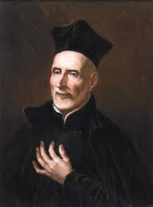

Biografia
San José de Calasanz (1557-1648)Fue un sacerdote español, fundador de las Escuelas Pías y considerado el precursor de la escuela pública gratuita en Europa.. Se dedicó a la educación de los niños más pobres y necesitados, promoviendo una educación integral que abarcaba lo intelectual, lo físico y lo espiritual.
Frases Celebres
San José de Calasanz (1557-1648)Fue un sacerdote español, fundador de las Escuelas Pías y considerado el precursor de la escuela pública gratuita en Europa.. Se dedicó a la educación de los niños más pobres y necesitados, promoviendo una educación integral que abarcaba lo intelectual, lo físico y lo espiritual.